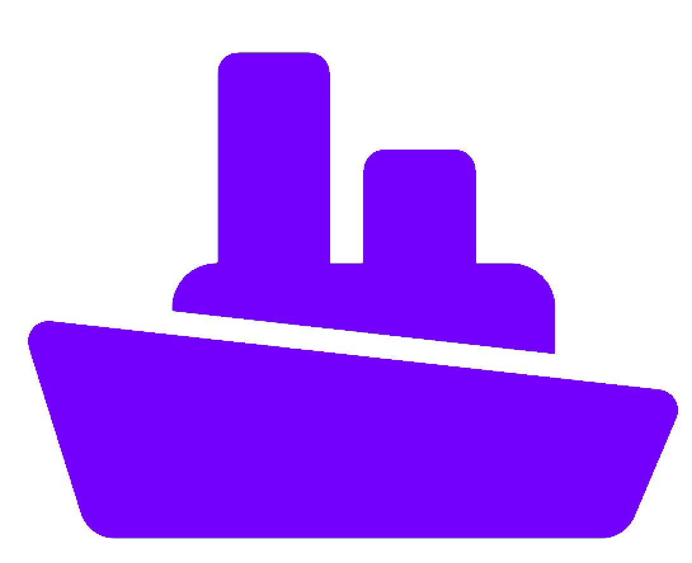
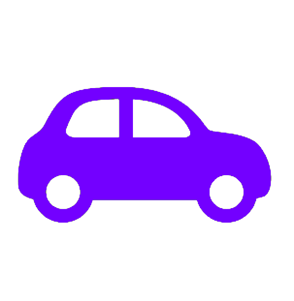

New in 7 days
 Heard within 30 days
Heard within 30 days Heard more than 30 days ago
Heard more than 30 days ago Maritime Mobile
 Portable or Rover
Thanks for support to:
G0IIQ F6FLQ IW5BMS VK6PY
W2LPL
Latest database update: